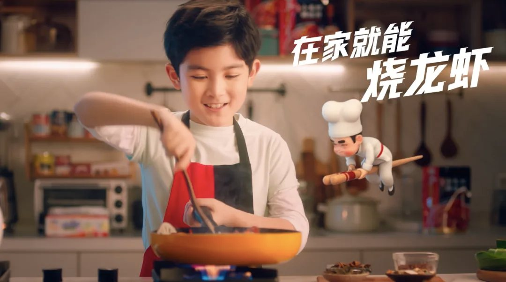
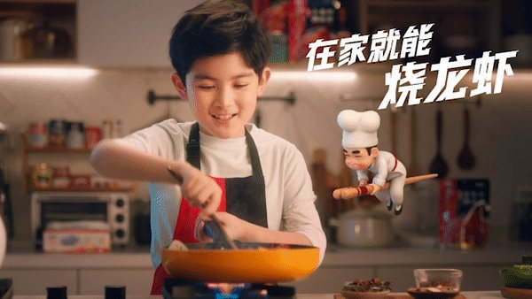
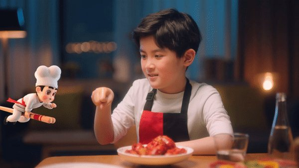
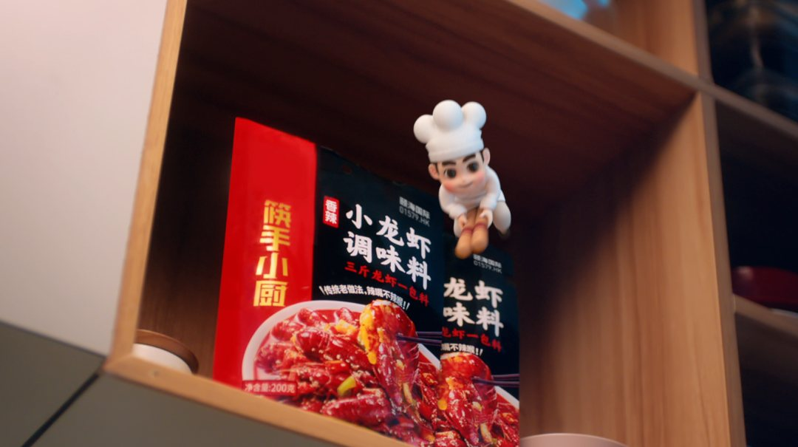
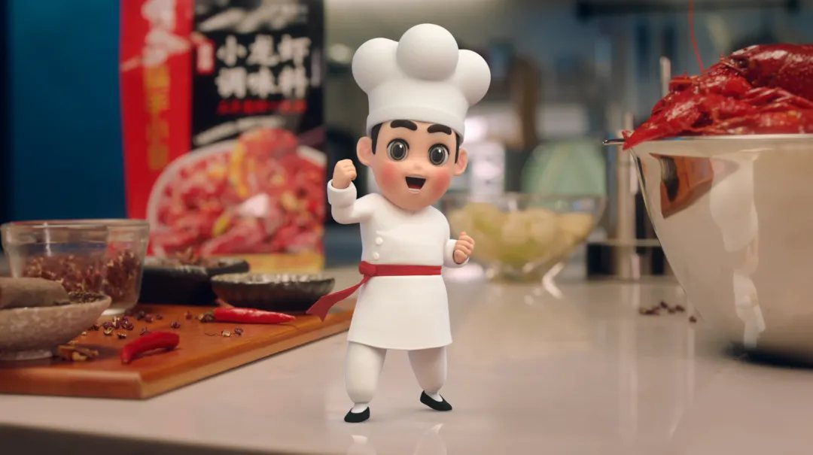
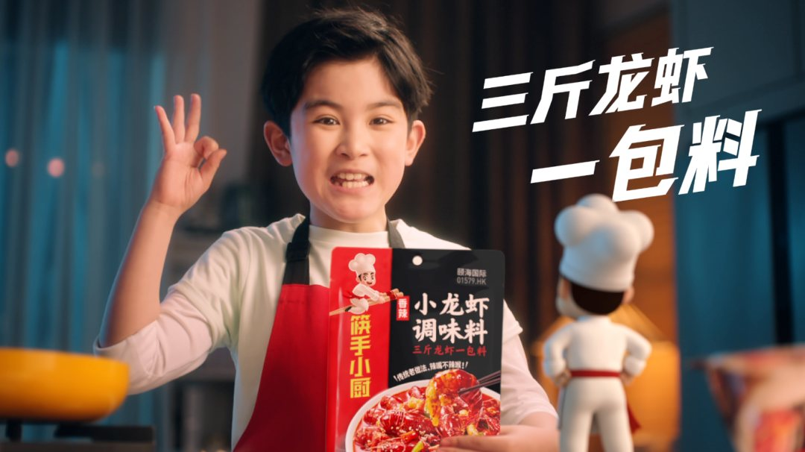
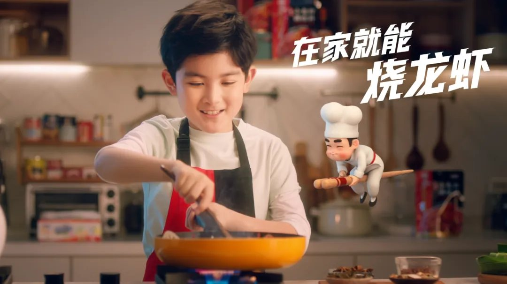
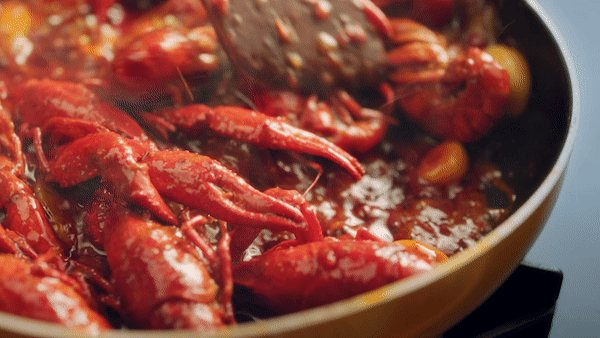
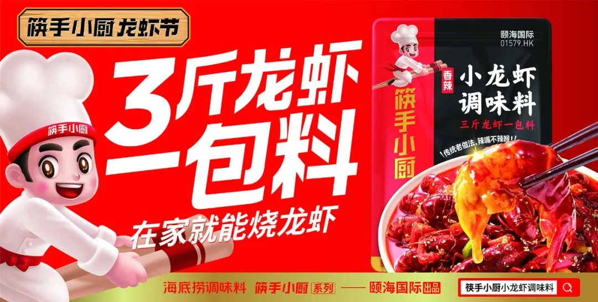

电视广告是华与华的看家本领，可以说很多年轻人都是看着华与华的电视广告长大的。从 2002 年的“康必得治感冒，中西药结合疗效好”到 2003 年的“胃痛？光荣！肯定是忙工作忙出来的”和“拍照大声喊田七”等，都是华与华早期的代表作。
2005 年美国《商业周刊》评选了中国花钱最大的十大电视广告，其中有四个是华与华的客户，包括黄金搭档，黄金酒，三精蓝瓶和田七牙膏。
在进入互联网时代后，电视广告就没有那么多了，市场这才开始注意到华与华的超级符号。不过，华与华的超级符号或电视广告从来都是一体的。
华与华认为企业战略、品牌战略、产品开发、包装设计、广告创意等，这些所有的事都是一件事，要整体思考，才能一次做全，一次做对。那么，颐海国际的筷手小厨就是这样一个案例。本期文章就主要为你分享我们做筷手小厨小龙虾调味料广告片的心法。本文，我们将从以下 3 个角度为你详细解析，华与华打造广告片的核心原理：1 、华与华广告片四大原则；2 、广告片黄金铁律；3 、筷手小厨小龙虾调味料广告片的创意解析。
【项目背景】筷手小厨是颐海国际（ 01579 . HK ）旗下中式复合调味料品牌，成立于 2018 年。旗下产品有小龙虾系列、鱼系列、卤汁系列等产品，其中小龙虾系列是拳头产品，上市仅一年就成为业内爆品，跃居品类第一。2019 年，华与华为筷手小厨品牌创作了品牌新资产——筷手小品牌超级角色。
我们将策划打造一条既卖货又能记住品牌角色的 15s 广告片，将品牌角色和新包装一并推出。这条广告片的目的很明确：记住筷手小厨形象，认准新包装，形成指名道姓的购买。
通过选择一个和小厨人设年龄相仿的小男孩儿作为广告片的男一号，把“简单”的优势直白地传达给观众——“只要用了这包料，简单到连小孩都会做。”在出乎意料的情理之中建立了“反差”戏剧点。此外，在整支片子中，我们充分发挥了小厨和小孩子的互动，并在互动中表现产品卖点，既有趣又形象，让广告片更具有识别性和意外感。筷手小厨品牌角色作为我们的主角，在品牌与 IP 形象上建立了对等关系，通过密集重复，让大家即便只通过品牌角色，也能知道这个品牌是什么，并积累下品牌资产，为以后消费者购买其他产品提前搭建了“品牌平台”。
3广告不要铺垫第一秒就直奔正题广告片，是产品、是品牌的一场秀，要让产品成为英雄。



沟通的成本不光是对宣传者来说很高，对受众也高。受众生活中需要沟通的事情多着呢，要是每个兜售商品的都要去跟人家沟通一番，受众有那么多时间吗？当然没有！所以，一开始就要让顾客记住产品或品牌符号、记住产品/品牌的名字。尤其是记住名字，因为在同一个品类，消费者记不住几个名字，被记得名字的才有机会，被记住最多的，卖得才可能最多。在筷手小厨调味料广告片中，我们一开始就亮出产品包装和 IP 形象，喊出“筷手小厨小龙虾调味料”的产品名，直截了当地告诉受众“我是谁、我长什么样子？”接着说“ 3 斤龙虾 1 包料，在家就能烧龙虾”，告诉受众这包料解决的就是“怎么在家烧龙虾”的问题。
广告是针对受众，而受众的特征的茫然，是漫不经心，是在做其它事，比如在织毛衣，去上厕所。这就要求我们要把广告片也当广播广告来做。所以广告的第一句话——筷手小厨小龙虾调料。听到小龙虾，把他唤醒：哦，做小龙虾的，怎么做的？我想想看看 or 听听。只有勾起他的兴趣，广告片的沟通才算成立。



4所听=所见=所得让人行动，让人买除开小孩做菜的核心创意，还要刺激购买，而卖货关键在“好吃”。我们的目标还有一个：“把人活生生看饿了”，让他产生购买欲望和行动。货卖一张图，有食欲的菜品就是打动购买的利器。所以在片子中我们放大了龙虾翻炒、汤汁浓郁、沸腾冒泡的画面，利用三分屏的形式展示，一家 3 口花式吃虾的镜头，最大化产品的价值。



天气渐热，正是吃小龙虾的季节！
